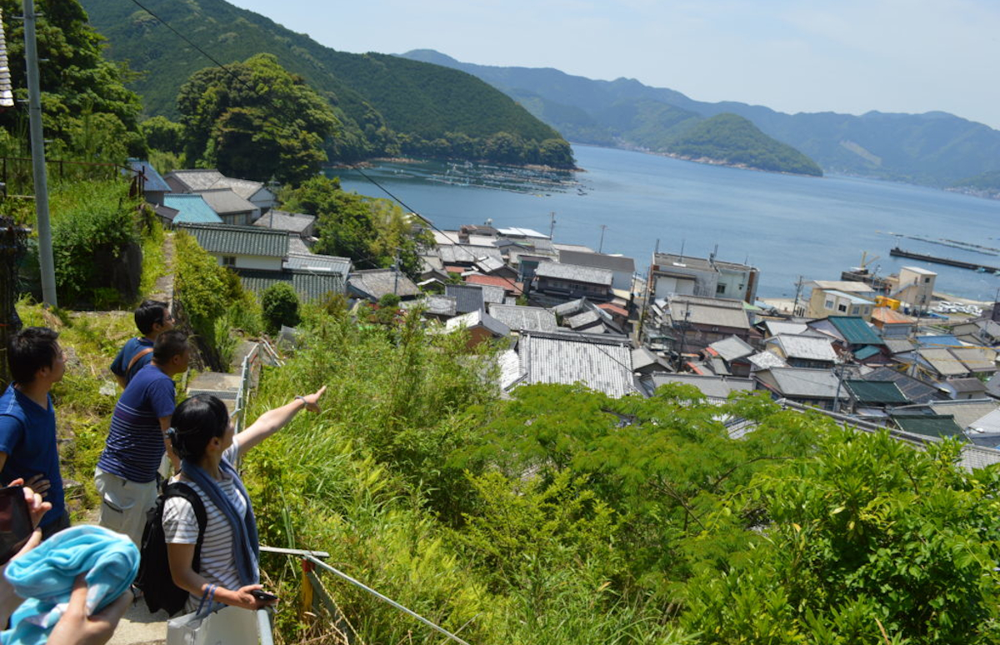

移住体験ツアーのご案内
予約にて移住体験ツアーを受け付けております。
まず尾鷲を訪れて尾鷲を感じてください。
- おわせ暮らしサポートセンター内で簡単なアンケートと説明。
- 尾鷲市街散策
- 漁村地域案内
- 空き家内覧ツアー
- 漁業、林業職場見学など
日程・通年(1組限定・2週間前までに予約ください。)
主な内容
予約時にご希望をお伺い致します。(場合によりご希望に添えないことが御座います。)
予約方法 電話での予約となります。事前に希望内容などメールを頂けるとスムーズです。
予約にて移住体験ツアーを受け付けております。
まず尾鷲を訪れて尾鷲を感じてください。
日程・通年(1組限定・2週間前までに予約ください。)
主な内容
予約時にご希望をお伺い致します。(場合によりご希望に添えないことが御座います。)
予約方法 電話での予約となります。事前に希望内容などメールを頂けるとスムーズです。